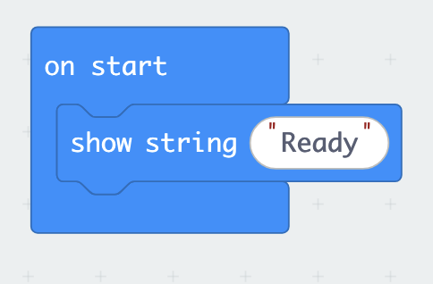
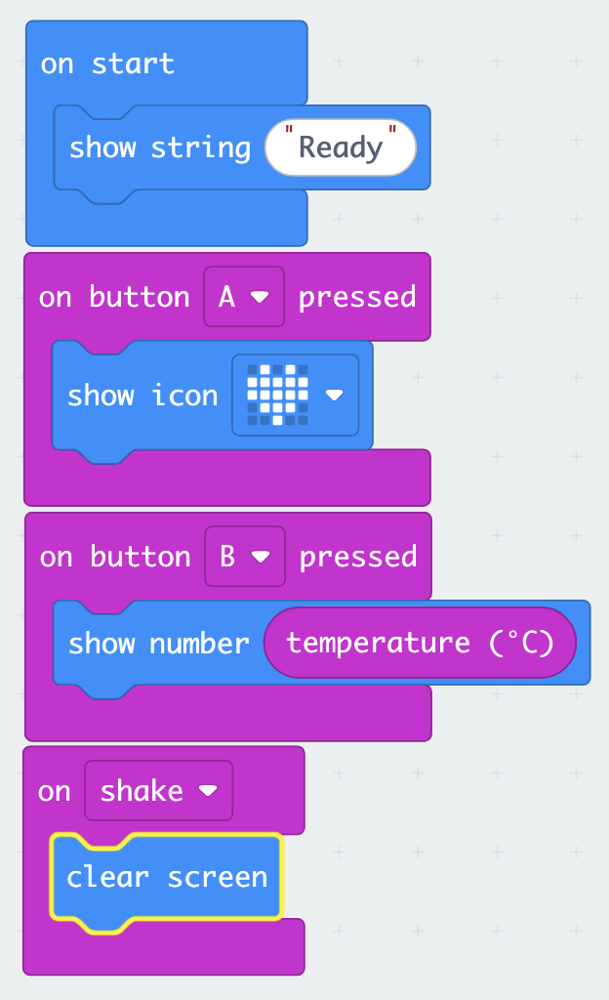
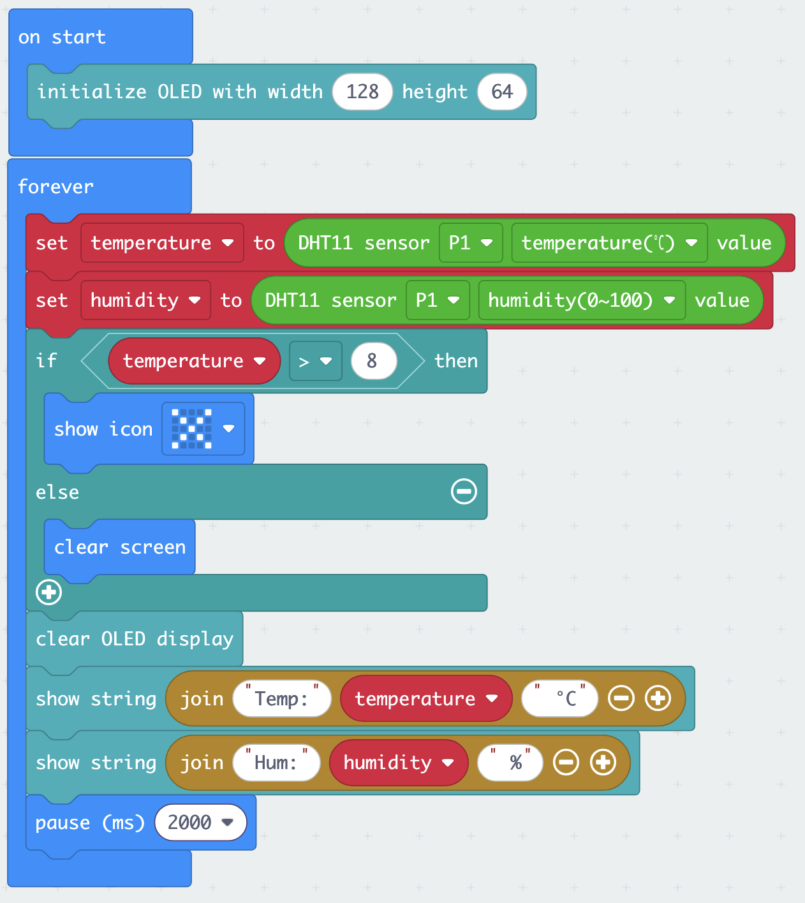
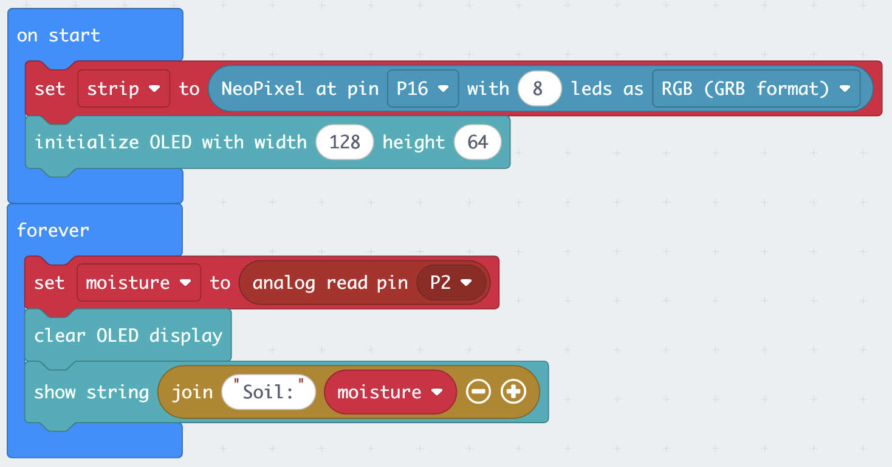
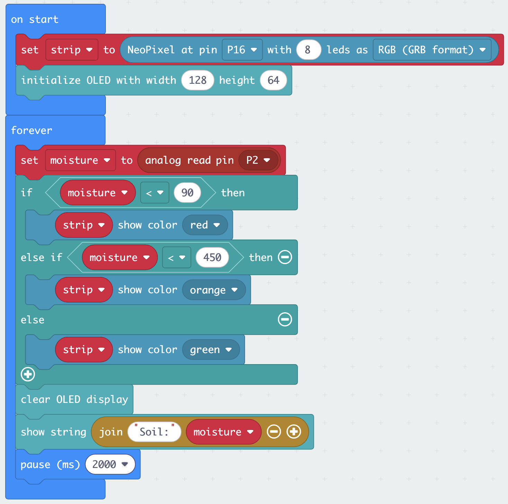

Exercises: building a smart greenhouse
You work in your team of 4–5 throughout, with one micro:bit and one Smart Health Kit per team. Take turns at the keyboard: every team member should understand each step before you move on.
To look up a sensor or actuator, use The kit: sensors and actuators. When something does not work, see Troubleshooting.
Team roles
Assign roles at the start of each exercise and rotate them.
| Role | What they do |
|---|---|
| Driver | Operates the keyboard in MakeCode |
| Navigator | Reads the instructions aloud and tells the driver what to do |
| Hardware lead | Connects and handles sensors and cables |
| Checker | Watches the device output and spots when something is wrong |
| Documenter | Notes down observed values, thresholds and quirks for the Canvas lab quiz |
The exercises
| Exercise | Sensor | Output | In the greenhouse | |
|---|---|---|---|---|
| 1 | Push the button | built-in (buttons, temperature) | LED matrix | your first complete device |
| 2 | Greenhouse climate monitor | DHT11 (temperature + humidity) | OLED + LED matrix | when to ventilate |
| 3 | Irrigation alarm | soil moisture | OLED + Rainbow LED | when to water |
| ★ | Mini challenge | your choice | your choice | build your own device |
Setup
Do not rush this: a broken setup wastes more time than a careful one.
Step 1: Connect the hardware
- Slot the micro:bit into the Sensorbit edge connector: the USB port faces up, the LED matrix faces out
- Press it firmly until it seats fully: a loose connection causes intermittent failures
- Connect the micro:bit to your laptop with the USB cable
- The micro:bit lights up and shows a startup animation: this confirms it has power
Every sensor in this lab connects with a three-wire cable. The Sensorbit’s pin rows are labelled G (ground), V (3.3 V power) and S (signal), and so are the pins on each sensor. Connect G to G, V to V, S to S, every time. By convention the wires are black (G), red (V), and yellow or another colour (S), but trust the printed labels, not the colours.
Step 2: Open MakeCode
- Open a browser and go to makecode.microbit.org
- Click New Project
- Name it
lab-sessionand click Create - You see the three-panel interface: simulator (left), toolbox (middle), workspace (right)
Step 3: Flash a test program
This confirms your USB connection works before you add anything else.
- In the toolbox, find the Basic category
- Drag a show string block into the
on startblock already on the workspace - Type
Readyin the text field - Click the Download button (bottom left of the workspace)
- A
.hexfile is saved to your computer: drag it onto the MICROBIT drive that appeared in Finder or File Explorer - The orange LED on the micro:bit flashes while it writes: wait for it to stop
Readyshould scroll across the LED matrix

show string "Ready" block sits inside on start.Ready scrolls across the LED matrix. If it does not, check the Troubleshooting page or ask a teacher before going further.
Step 4: Add the Elecfreaks extension
- In the toolbox, scroll to the bottom and click Extensions
- In the search box type
smarthomeand press Enter - Select the smarthome package from Elecfreaks
- Close the extensions panel: you now see new categories at the bottom of the toolbox, including SmartHome, OLED and Neopixel
You add the extension once per project. When you start a new project later, add it again.
Exercise 1: Push the button
Before wiring anything, you build a complete working device using only what is already on the micro:bit: two buttons, a temperature sensor, an accelerometer and the LED matrix. Within ten minutes, your team has a pocket thermometer.
What you will build
- Press button A → a heart icon appears
- Press button B → the current temperature is shown
- Shake the micro:bit → the display clears
No wiring. No extension blocks. Everything is built in.
Building the program
Keep working in your lab-session project from the setup.
Step 1: React to button A
- From Input, drag an
on button A pressedblock onto the workspace. Notice it has the same shape ason startandforever: a container with a smooth top edge and no notch, so it cannot snap inside or underneath another block. It always starts its own stack on the workspace. This is an event block: the blocks you place inside it run only when that event happens. - From Basic, put a
show iconblock inside it and pick the heart.
Step 2: Show the temperature on button B
- From Input, drag another
on button A pressedblock onto the workspace, and change it to button B. - From Basic, put a
show numberblock inside it - From Input, find the
temperature (°C)block. Notice its oval shape: oval blocks are reporter blocks. They return a value and must be plugged into a slot, not placed on their own line. Plug it into theshow numberslot.
Step 3: Clear on shake
- From Input, drag an
on shakeblock onto the workspace - From Basic, put
clear screeninside it
Step 4: Download and test
Your workspace should now look like this: four separate stacks, each starting with its own container block.

on start block still shows Ready from the setup test. Note how the oval temperature (°C) block sits inside the show number slot.Flash, then press A, press B, shake. All three should respond.
This program has no forever loop at all. Event blocks sit and wait; the micro:bit does nothing until a button is pressed or the board is shaken. Remember this: the next exercise uses the opposite approach.
- Button A shows the heart
- Button B shows a temperature
- Shaking clears the display (best seen after pressing A)
input.onButtonPressed(Button.A, function () {
basic.showIcon(IconNames.Heart)
})
input.onButtonPressed(Button.B, function () {
basic.showNumber(input.temperature())
})
input.onGesture(Gesture.Shake, function () {
basic.clearScreen()
})
basic.showString("Ready")Discussion: your first sensor limitation
Compare the temperature your micro:bit shows with a room thermometer, or with another team’s micro:bit.
Question for your team: The built-in sensor measures the temperature of the processor chip, not the air. The chip warms up as it works. What does this mean for the reading? Would this “thermometer” be good enough to decide when to ventilate a greenhouse? Note your observation: the gap between what a sensor actually measures and what you want to know comes back in every exercise.
Extension challenge (if you finish early)
Add an on button A+B pressed event that scrolls your team’s name across the display.
Exercise 2: Greenhouse climate monitor
A tomato greenhouse should stay between about 18 °C and 28 °C. Above that, the plants are stressed and the roof vents should open. You are building a device that hangs among the plants and shows temperature and humidity continuously, so the grower can check conditions at a glance, and that raises an alarm when it gets too hot.
What you will build
- Every 2 seconds: read temperature and humidity from the DHT11 sensor
- Display both values on the OLED screen
- If the temperature is above your alarm threshold: the LED matrix shows a warning icon
Hardware
This is your first external sensor: one cable, three wires, and the wiring rule from the setup.
- Connect the DHT11 sensor to the Sensorbit port labelled P1. G to G, V to V, S to S.
- Plug the OLED screen into the Sensorbit’s IIC socket
You will not find a P0 port on the Sensorbit: P0 is wired to the board’s built-in buzzer and headphone jack. The G/V/S ports start at P1.
Building the program
Start a new project (climate-monitor). Add the Elecfreaks extension: extensions are per-project, so you need it again here.
Step 1: Initialise the OLED in on start
The OLED must be initialised once before you can write to it.
- In the OLED category, find the block labelled something like
initialize OLED width 128 height 64 - Drag it into the
on startblock on the workspace
Step 2: Store the DHT11 readings in variables
The DHT11 block in the SmartHome category is a reporter block: the same oval shape as the built-in temperature (°C) block you used in Exercise 1. It reads the sensor and returns the measurement in one go. It has two dropdowns: one to select the pin, one to select the measurement (temperature or humidity).
- From Variables, click Make a Variable and create one called
temperature - Create a second variable called
humidity - In the
foreverblock, add aset temperature toblock (from Variables). From SmartHome, find theDHT11 sensor [pin] temperature(°C) valueblock, set the pin to P1, and plug it into the value slot ofset temperature to. - Below that, add
set humidity toand plug in a secondDHT11 sensor P1 humidity(0~100) valueblock: same block, different measurement selected in the dropdown.
Step 3: Display on the OLED
- From OLED, add a
clear OLED displayblock: this wipes the screen before writing new values - To show the temperature: from OLED, add the
show string(orshow number) OLED block. Use the Text → join block (in Advanced → Text) to combine the label"Temp: ", thetemperaturevariable and the unit" C"into one line. - Repeat for humidity:
"Hum: "+humidity+" %"
If the join block is unfamiliar, a simpler approach is to put temperature on its own line with just show number and humidity on the next. Labels can go on separate lines above each number.
Step 4: Add a temperature alarm
First flash the program as it is and read the room temperature on the OLED. The Documenter writes it down.
- From Logic, add an
if / then / elseblock, placed before theclear OLED display - Set the condition:
temperature > 28(the upper limit for our tomatoes). To test it in the classroom, use a threshold 2–3 degrees above the room temperature you just read. - In the
ifbranch: from Basic, addshow iconand pick the warning or exclamation symbol - In the
elsebranch: from Basic, addclear screen
Step 5: Wait 2 seconds
At the very end of the forever block:
- From Basic, add
pause (ms)set to 2000
This is essential: the DHT11 can only be read once every two seconds. Without the pause, you get read errors.
Exercise 1 used events: code that waits for something to happen. This exercise uses polling: a forever loop that reads the sensor again and again and reacts to what it finds. Events only exist for the micro:bit’s built-in inputs; external sensors must be polled. You now know both fundamental patterns of microcontroller programming.
Step 6: Download and test

if/else sits before the OLED display blocks, and the pause 2000 comes last. Use your own threshold in the condition.Download and flash the program. Then:
- Check that the OLED shows values
- Breathe gently on the DHT11: temperature and humidity should increase slightly
- Warm the sensor in your hand: the temperature should rise above your alarm threshold and the warning icon should appear
- The OLED shows temperature and humidity
- Values change (even slightly) when you breathe on the DHT11
- The LED matrix shows the warning icon when the temperature exceeds your threshold, and clears when it drops below
let humidity = 0
let temperature = 0
OLED.init(128, 64)
basic.forever(function () {
temperature = smarthome.dht11Sensor(DigitalPin.P1, smarthome.DHT11_state.DHT11_temperature_C)
humidity = smarthome.dht11Sensor(DigitalPin.P1, smarthome.DHT11_state.DHT11_humidity)
if (temperature > 28) {
basic.showIcon(IconNames.No)
} else {
basic.clearScreen()
}
OLED.clear()
OLED.writeStringNewLine("Temp:" + temperature + " C")
OLED.writeStringNewLine("Hum:" + humidity + " %")
basic.pause(2000)
})Exact function names depend on the smarthome extension version: if the above does not compile, check the block names shown in the MakeCode toolbox.
Discussion: accuracy and fitness for purpose
The DHT11 has an accuracy of ±2 °C and ±5 % humidity, and it measures humidity only up to 90 %. Your alarm fires at 28 °C.
- The true temperature is 27 °C, but the sensor reads 2 °C too high. What does your program see, and what does it do?
- The true temperature is 29 °C, but the sensor reads 2 °C too low. Does the alarm fire?
- The program sees 29 °C and raises the alarm, although it is not too hot: a false alarm.
- The program sees 27 °C and stays quiet, although it is too hot: a missed alarm.
Close to the threshold, the sensor’s error decides what happens, not the real temperature.
Question for your team: Is this device good enough to control the vents of a greenhouse? What would a more reliable design need? Note your answer: it appears in the Canvas lab quiz.
Question for your team: Is this device good enough to control the vents of a greenhouse? What would a more reliable design need? Note your answer: it appears in the Canvas lab quiz.
Extension challenge (if you finish early)
Add a humidity alarm. Humidity above about 85 % for many hours favours fungal diseases such as grey mould (Botrytis). Extend your if / else to an if / else if / else that shows a different icon, or writes "HUMID!" to the OLED, when humidity is above 85. Breathe on the sensor to test it. What happens close to the sensor’s 90 % limit?
Exercise 3: Irrigation alarm
A greenhouse grower wants to avoid over- and under-watering a seedling bed. Rather than checking by hand every day, a moisture sensor gives a continuous reading. You build a device that colour-codes a Rainbow LED strip to show the soil status at a glance: red (dry), amber (moist), green (wet), so the grower knows immediately whether to water.
What you will build
- Soil moisture sensor read continuously
- Raw numeric value shown on the OLED
- Rainbow LED strip: red when dry, amber when moist, green when wet enough
- Thresholds calibrated by you during the exercise
Hardware
- Connect the soil moisture sensor to the Sensorbit port labelled P2
- Connect the Rainbow LED strip to the Sensorbit port labelled P16
- Keep the OLED in the IIC socket
Building the program
Start a new project (irrigation-alarm). Add the Elecfreaks extension.
Step 1: Set up the Rainbow LED strip in on start
The Rainbow LED strip is controlled with Neopixel blocks, which came with the Elecfreaks extension.
- From Variables, create a variable called
strip - From Neopixel, drag the block
set strip to Neopixel at pin P16 with 8 leds as RGB (GRB format) - Set
stripto this block: this initialises the LED strip
Also add the OLED initialiser: initialize OLED width 128 height 64.
Step 2: Read the soil moisture sensor in forever
The soil moisture sensor is an analog sensor. No special extension block is needed: you read it directly from a pin, and you get a number on a scale.
- Create a variable called
moisture - From Advanced → Pins, drag an
analog read pin P2block and setmoistureto it - From OLED, clear the OLED and display the value: label
"Soil: "joined tomoisture

on start initialises the LED strip and the OLED; forever reads the sensor and shows the raw value.The analog read returns a number between 0 and 1023. Higher value = wetter. Wet soil conducts electricity well, so more current reaches the signal pin and the number is high. Dry soil conducts poorly: in open air the reading sits near 0. Run the program and check your own readings before setting thresholds.
Step 3: Discover your thresholds
Before adding colour logic, flash and test the raw readings:
- Hold the sensor probes in the air: note the value
- Press your fingers firmly across both metal probes: this simulates wet, conductive soil. Note the value.
- Lightly touch the probes: note the intermediate value
These three readings give you the range for your thresholds. The Documenter writes them down; you need them for the lab quiz.
| Condition | Raw value |
|---|---|
| Air (dry) | |
| Light contact (moist) | |
| Firm contact (wet) | |
| Your dry/moist threshold | |
| Your moist/wet threshold |
Step 4: Colour-coded response
Add an if / else if / else block after the moisture read:
if moisture < [your dry/moist threshold]:
strip show colour red
else if moisture < [your moist/wet threshold]:
strip show colour orange
else:
strip show colour greenNote the direction: low readings mean dry, so the first check catches values below your dry threshold.
Use your observed values from Step 3 as the thresholds. Use the Neopixel block strip show colour in each branch.
Step 5: Slow the loop down
At the very end of the forever block, add a pause (ms) block (from Basic) set to 2000.
Unlike the DHT11, the soil moisture sensor doesn’t need this: it can be read as fast as you like. The pause is for the humans: without it, the OLED value updates many times per second and is hard to read.
Step 6: Download and test
Flash, then check that all three colours appear as you move between dry, light contact and firm contact.

- The OLED shows a number that changes with contact
- The Rainbow LED goes red in air, amber with light contact, green with firm contact (or similar: your thresholds may give a different boundary)
- You have written down your threshold values
let moisture = 0
let strip = neopixel.create(DigitalPin.P16, 8, NeoPixelMode.RGB)
OLED.init(128, 64)
basic.forever(function () {
moisture = pins.analogReadPin(AnalogReadWritePin.P2)
if (moisture < 90) {
strip.showColor(neopixel.colors(NeoPixelColors.Red))
} else if (moisture < 450) {
strip.showColor(neopixel.colors(NeoPixelColors.Orange))
} else {
strip.showColor(neopixel.colors(NeoPixelColors.Green))
}
OLED.clear()
OLED.writeStringNewLine("Soil:" + moisture)
basic.pause(2000)
})Replace 90 and 450 with the threshold values you observed on your hardware.
Discussion: calibration and drift
The raw reading is a number between 0 and 1023. You just set your thresholds based on a minute of testing with your fingers.
Question for your team: The grower leaves this sensor in the seedling bed for three months. The probe tips corrode. What happens to the readings? Would your thresholds still be valid? And would they be valid in a different potting soil, or after fertilising (salts conduct electricity too)? What would you need to do to make this device reliable for long-term use?
Extension challenge
Graduated display. Instead of showing every LED in the same colour, make the number of lit LEDs match the moisture level: 0 LEDs for bone dry, all 8 for saturated. This gives the grower more detail than three categories. Use the Neopixel block strip set pixel color at [n] to [colour] inside a loop.
★ Mini challenge
Aim to start this about 40 minutes before the end of the session.
Choose one scenario and build as much as you can. You do not need to finish: the goal is to sketch the logic, start implementing, and find out where you get stuck.
| Scenario | Suggested sensors | Suggested outputs | |
|---|---|---|---|
| A | Plant health station | DHT11 + soil moisture | OLED shows both readings; Rainbow LED summarises the overall status |
| B | Automatic vent | DHT11 | Servo turns to “open” above your temperature threshold and back to “closed” below it |
| C | Greenhouse fan | DHT11 | Fan runs while it is too warm or too humid; OLED shows why |
| D | Seed storage monitor | DHT11 | OLED shows the readings; Rainbow LED turns red when it is too humid for stored seed |
| ★ | Free choice | Any from the kit | Any combination of outputs |
The servo and the fan are not covered in the exercises. Look for their blocks in the SmartHome category, or use Advanced → Pins (servo write pin … to … for the servo). Plug them into a free port: P8, P12 or P13–P15.
Motors draw a lot of current. If the micro:bit restarts as soon as the motor runs, the USB power is not enough: ask a teacher for a battery pack.
For your chosen scenario:
- Agree the behaviour: what is the trigger? What is the response?
- Sketch the logic: write pseudocode or draw a simple flowchart on paper before touching the keyboard
- Build what you can: start with the first sensor working, then add the next part
- Note your sticking point: what is the first thing that didn’t work, and why?
Before you leave
- Save your code. In MakeCode, click the save icon (floppy disk) to download the
.hexfile for each project. You can also copy the project URL from the browser address bar to reopen it later. - Disconnect carefully. Unplug the USB cable before removing the micro:bit from the Sensorbit.
- Return the sensors to the foam tray. Each sensor has its own slot.
Take the lab quiz in Canvas. The questions ask about what you observed: your threshold values, the limitations you noticed, and what you would change. Your Documenter’s notes are the answers.